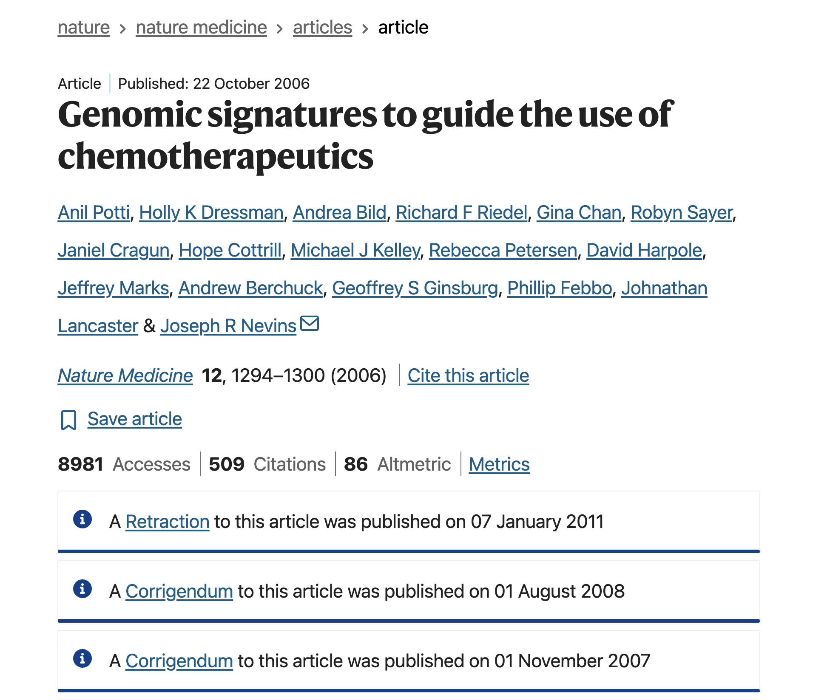
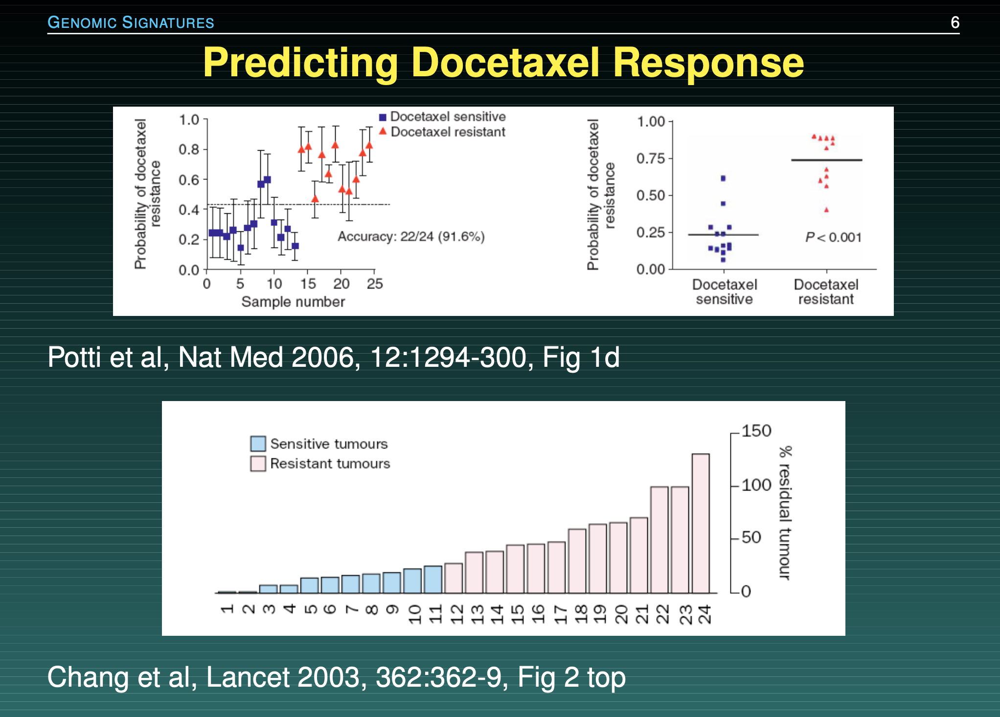

01:30
Irreproducibility Tales (part II)
Famous Catastrophes in Computational Irreproducibility
The Duke University Cancer Trials Disaster
Reading
- Title: Forensic Bioinformatics: Investigating Reproducibility of Results
- Authors: Teresa Melcher
- Journal: Science Editor
- Year: 2011
- https://www.csescienceeditor.org/article/forensic-bioinformatics-investigating-reproducibility-of-results/
Supporting Materials
Duke Clinical Trials - 60 Minutes (short video, 13:25 minutes)
https://www.youtube.com/watch?v=W5sZTNPMQRM
The Importance of Reproducible Research in High-Throughput Biology
The Story
Overview
Researchers at Duke University claimed they had built a genomic model that could perfectly match a cancer patient’s tumor to the ideal chemotherapy drug.
Clinical trials began, and patients were actively treated based on these computational predictions.
Overview

Quote from abstract: “We developed gene expression signatures that predict sensitivity to individual chemotherapeutic drugs”
In other words: they could predict whether patients would respond to treatment.
This paper generated a lot of exciment and hope among cancer researchers.
Replication Attempt
Kevin Coombes and Keith Baggerly—biostatisticians at UT MD Anderson Cancer Center around 2007—tried to replicate the results and uncovered several data management errors.
Baggerly’s Slides1
One of the issues
Due to poor documentation, columns in spreadsheets had accidentally shifted by one space, matching the wrong drugs to the wrong patients, and data markers were scrambled.
Keith Baggerly discovered that the Duke team’s software expected one data file with a “header” row and another without, but they accidentally supplied headers with both.
Potti et al’s gene list
"1881_at"
"31321_at"
"31725_s_at"
"32307_r_at"
...Baggerly & Coombes’ gene list
"1882_at"
"31322_at"
"31726_s_at"
"32308_r_at"
...Another of the issues
Baggerly’s audit revealed that for certain chemotherapy drugs, the Duke team accidentally swapped the “sensitive” and “resistant” data labels.

Timeline
- Nov-Dec 2006:
- First questions of Baggerly & Coombes to Potti & Nevins
- Baggerly & Coombes’ first report describing errors.
- Jan-May 2007
- Baggerly & Coombes urge Nevins to review the data.
- Potti and Nevins make changes, but errors are still there.
- Potti & Nevins want to bring the issue to a close.
- Jun-Sep 2009
- Baggerly & Coombes learned clinical trials had been conducted (in 2007, 2008)
- Baggerly & Coombes submit critique paper to the Annals of Applied Statistics
- Sep-Oct 2009, Jan 2010
- Story covered in The Cancer Letter
- July-Oct 2010
- Duke resuspends trials, first paper retraction, Duke terminates trials.
The straw that broke the camel’s back
What finally broke the case was the story in The Cancer Letter exposing that the lead scientist lied on his CV about being a Rhodes Scholar.
Discussion Time
Index Cards Activity
- This activity is designed for students in 10-12? rows
- Each row will receive a set of 4 blank index cards
- In addition, the first student in a row will receive an index card with the raw data
- To be clear: only the first student will see the raw data
- You will have to perform some processing steps (by-hand) to be recorded on the blank index cards
- There will a time-limit for each processing step
Index Cards Activity
Instructions for blank index card #1:
In your index card-1 write down the raw data applying the following:
- THE DATE CONVERSION: Convert the dates from
DD-MM-YYYYto the American standardMM/DD/YYYYformat.
Index Cards Activity
Instructions for blank index card #2:
In your index card-2 write down the data of card-1 by applying the following:
- THE HEADER SHIFT: Drop the top row (
"Patient", "Score", ...) completely and shift all data cells up by one row to fill the void.
01:30
Index Cards Activity
Instructions for blank index card #3:
In your index card-3 write down the data of card-2 by applying the following:
- THE ROUNDING DECIMALS: Round all decimal values in 2nd column to exactly one decimal place.
01:30
Index Cards Activity
Instructions for blank index card #4:
In your index card-4 write down the data of card-3 by applying the following:
- LOWER-CASE: Convert the values in the last column to lower-case.
01:30
Index Cards Activity
Let’s examine the cards!
Activity B
We’re going to divide the classroom into groups
Team A: Clinical Trials Directorate
- You have a promising cancer model.
- Patient lives are on the line, and funding is tight.
- You trust your internal scientists.
- You do not want “outsiders” slowing down your cure with bureaucratic audits.
Team B: The Forensic Biostatisticians
- You tried to recreate their charts from the published text and failed.
- You suspect catastrophic data scrambling.
- You are asking the authors to share their raw scripts and data.
Brainstorm
Huddle with your immediate neighbors to:
Team A
Find 3 arguments to justify keeping your code proprietary or private.
Team B
Formulate 3 arguments on why public peer-review is empty without code verification.
05:00
Time’s up: Please share your thoughts.
Debate
Academic journals should legally ban the publication of any computational paper that does not provide a fully reproducible public script repository.
02:00
Question
Baggerly recommends that all future clinical research papers must require 5 things:
- Data
- Provenance
- Code
- Non-scriptable descriptions
- Planned designs
Imagine you had to choose just two of Baggerly’s requirements to make legally mandatory.
Labs that fail to provide them, they lose their funding.
Which two would you mandate?
03:00
Quiz-Poll Time
Google Form
INSERT QR code!!!
INSERT
Quiz
When Baggerly and Coombes investigated the Duke cancer trial datasets, they discovered that patients were being matched to the completely wrong chemotherapy drugs. What caused this catastrophic shift?
The lab computers were running on different operating systems (Mac vs. Linux) which scrambled file paths.
An unrecorded manual copy-paste action caused data columns to shift by one space, scrambling row connections.
The researchers used a random number generator that lacked a static pseudorandom seed.
The data files were too large for the computer’s RAM, causing silent, truncated data loss.
Poll
Rate your level of agreement with this statement:
“Academic journals should legally ban the publication of any computational paper that does not provide a fully reproducible public script repository.”
- Strongly Disagree (Code or nothing)
- Disagree
- Neutral
- Agree
- Strongly Agree (Spreadsheets are essential)
Poll
If I uncovered a fatal data error in my lab director’s paper, I would:
- Report it publicly immediately.
- Quietly find a new lab.
- Stay silent to protect my graduation timeline.
Poll
In one word, what is the most critical asset a researcher protects when they use automated version control instead of manual tracking?
Final Words
The Duke Cancer Scandal represents the ultimate breakdown of computational transparency.
The issue wasn’t that the scientists made a mistake—everyone makes mistakes.
The disaster happened because their workflow was an unrecorded, manual black box that could not be audited until it was too late.
This is why platforms like GitHub are not optional luxuries for your career.
By forcing yourself to push raw, unedited script pipelines upstream, you allow code forensics to catch bugs at your workstation—long before they become a scandal or a tragedy.
Key Takeaways
Forensic Data Management: Data labels must be explicitly linked and automated; minor copy-paste adjustments can become a matter of life and death.
Unbroken Provenance: Transparency requires providing full, raw code and original configuration parameters alongside your final paper.